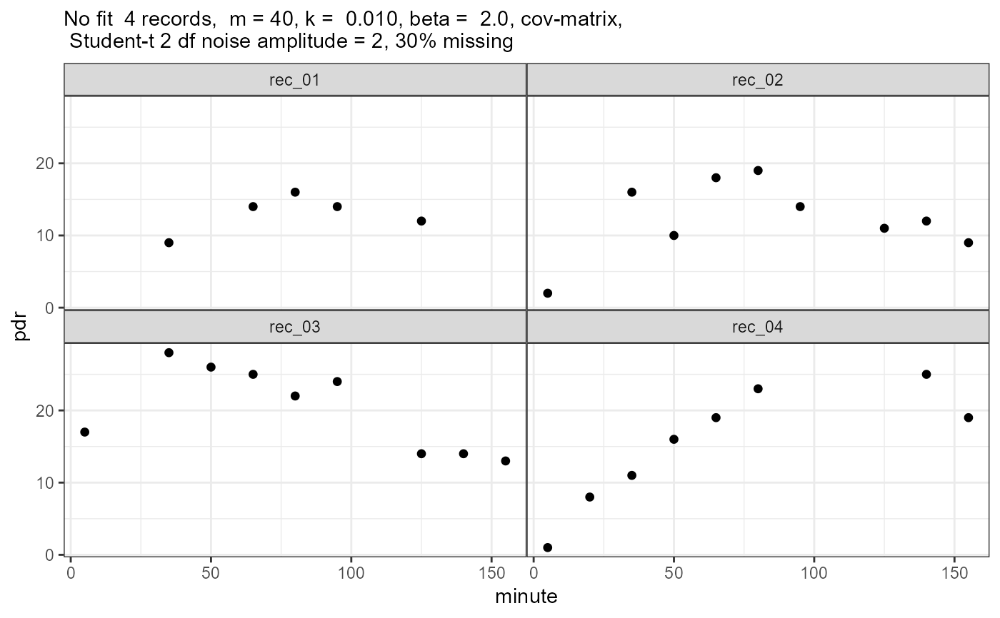

Generates simulated breath test data, optionally with errors. If none of the three
standard deviations m_std, k_std, beta_std is given, an empirical covariance
matrix from USZ breath test data is used. If any of the standard deviations is given,
default values for the others will be used.
simulate_breathtest_data(n_records = 10, m_mean = 40, m_std = NULL, k_mean = 0.01, k_std = NULL, beta_mean = 2, beta_std = NULL, noise = 1, cov = NULL, student_t_df = NULL, missing = 0, seed = NULL, dose = 100, first_minute = 5, step_minute = 15, max_minute = 155)
| n_records | Number of records |
|---|---|
| m_mean, m_std | Mean and between-record standard deviation of parameter m giving metabolized fraction. |
| k_mean, k_std | Mean and between-record standard deviation of parameter k, in units of 1/minutes. |
| beta_mean, beta_std | Mean and between-record standard deviations of lag parameter beta |
| noise | Standard deviation of normal noise when |
| cov | Covariance matrix, default NULL, i.e. not used. If given, overrides standard deviation settings. |
| student_t_df | When NULL (default), Gaussian noise is added; when >= 2, Student_t distributed noise is added, which generates more realistic outliers. Values from 2 to 5 are useful, when higher values are used the result comes close to that of Gaussian noise. Values below 2 are truncated to 2. |
| missing | When 0 (default), all curves have the same number of data points. When > 0, this is the fraction of points that were removed randomly to simulate missing |
| seed | optional seed; not set if seed = NULL (default) |
| dose | Octanoate/acetate dose, almost always 100 mg, which is also the default |
| first_minute | First sampling time. Do not use 0 here, some algorithms do not converge when data near 0 are passed. |
| step_minute | Inter-sample interval for breath test |
| max_minute | Maximal time in minutes. |
A list with 3 elements:
Data frame with columns
patient_id(chr), m, k, beta, t50 giving the effective parameters
for the individual patient record.
Data frame with columns
patient_id(chr), minute(dbl), pdr(dbl) giving the
time series and grouping parameters.
A comment is attached to the return value that can be used as a title
set.seed(4711) library(ggplot2) pdr = simulate_breathtest_data(n_records = 4) ggplot(pdr$data, aes(x = minute, y = pdr)) + geom_point() + facet_wrap(~patient_id) + ggtitle(comment(pdr$data))